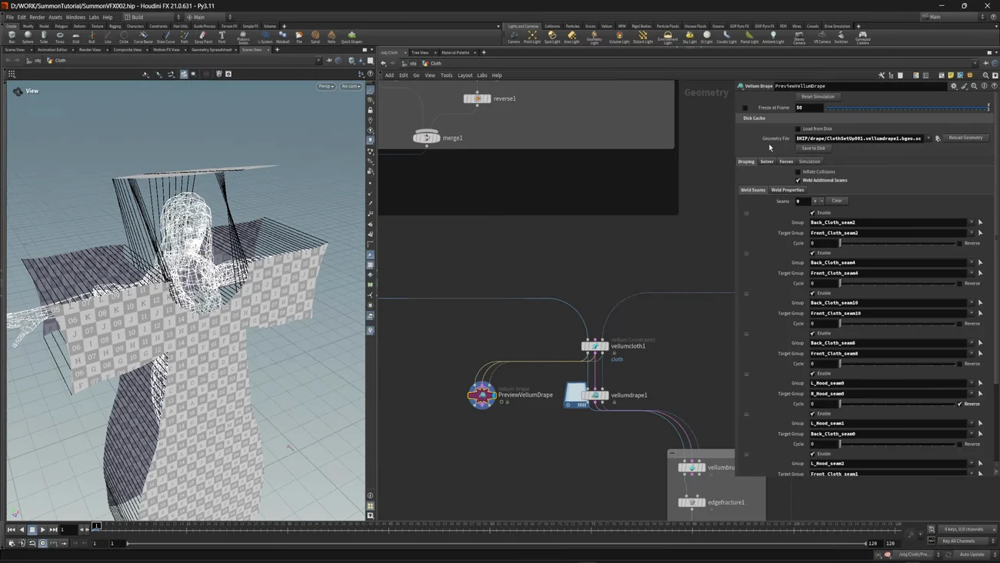
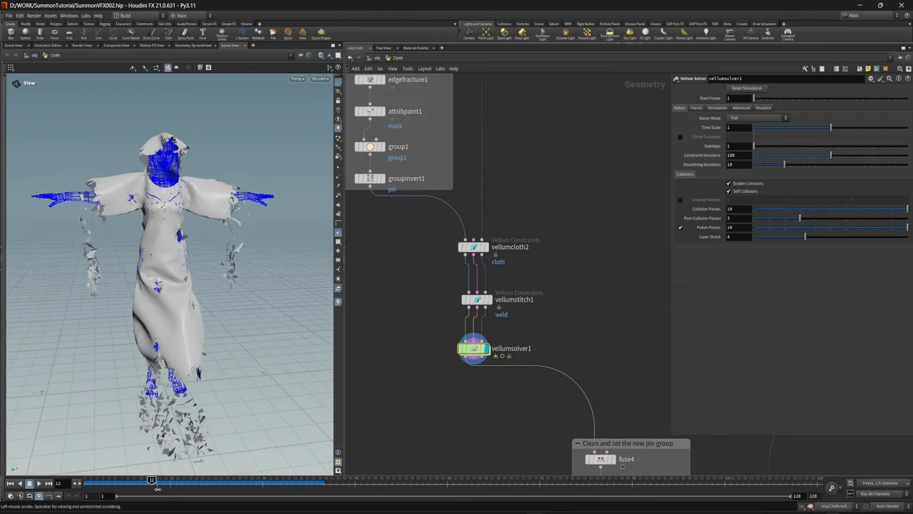

Summon VFX 3 — Vellum で布をドレープして破る
出典: Summon VFX | 3 | Set the Character & Cloth （SideFX 公式チュートリアル Realtime Summon VFX の第3回 / 講師 Cesar Merchan さん / Houdini FX 21.0.631 / 12:58 / 英語）。 このページは、上記の動画を見ながら自分用にまとめた日本語の学習メモです。SideFX 公式の翻訳ではありません。 前回はCopernicus でパックテクスチャを作るでした。
この回で扱うこと
- カーブから
Planar Patch from Curvesで布のパッチを作ること - 命名がそのまま作業効率になること。Vellum Drape のシーム対応は名前で指定します
Vellum Drapeで縫い合わせて、Freeze at Frame で静止形を確定させること- ボロボロに破る手順 —
Edge Fracture→ マスク → グループ反転でピン留め点を作る - Weld Points をしきい値0で壊すという使い方。ピンに入っていないピースを確実に落とします
- ループするシミュレーションを作って、VAT（Vertex Animation Textures）で Unreal に渡すこと
13分の中に「作る → 破る → 動かす → 書き出す」が全部入っています。 1つずつは短いのですが、ピン留めの作り方が2回出てくるので、そこだけ注意して読むと迷いません。
1. 布のパッチをカーブから作る
キャラクターは Mixamo のゾンビをそのまま使っています。布は自分で作ります。
- フードの形をカーブで描きます
resampleで点を揃えます（後で繋ぐためです）fuseで点をくっつけます- Planar Patch from Curves でメッシュにします。 Interior Edge Length がメッシュの密度になります
- ミラーして反対側を作り、もう1つ Planar Patch from Curves を通します
体を覆う布も同じ手順です。カーブをキャラクターのサイズに合わせて描き、
ミラーして fuse で隙間を埋め、Planar Patch from Curves で前面と背面を作ります。
ここで命名が効いてくる
動画がここで念を押しています。すべてに適切な名前を付けておくこと。 理由はこの後の Vellum Drape で、どのシームをどのシームに縫い合わせるかを名前で指定するからです。
命名が雑だとここで詰まります。逆に Back_Cloth_seam2 → Front_Cloth_seam2 のように
規則的に付けておけば、対応を選ぶだけで済みます。
先の工程のために名前を整えておくという、地味ですが効く話だと思います。
2. Vellum Drape で縫い合わせる
まず vellumconstraints（Vellum Constraints）を Constraint Type = Cloth で置き、
Density と Edge Length Scale と Stiffness を少し調整します。
そのうえで Vellum Drape です。

| 設定 | 値 | 意味 |
|---|---|---|
| Weld Additional Seams | オン | これをオンにするとシームの対応表が出ます |
| Weld Seams | 9組 | どのシームをどのシームに縫うかを名前で指定します |
| Freeze at Frame | 50 | 50フレーム目の形で止めて確定させます |
シームを1組ずつ有効・無効にすると、どこが繋がるのか目で確認できます。 全部指定してからシミュレーションすると、各シームに従って布が縫い合わさります。
Freeze at Frame 50 が要点です。ドレープは「落として自然な形にする」工程なので、 落ち着いたところで止めてしまいます。その結果をキャッシュしてディスクから読み直せば、 以降はもう計算しなくて済みます。
形を微調整したいところは vellumbrush（Vellum Brush）で直接触っています。
3. ボロボロに破る
ここからが面白いところです。手順を分解するとこうなります。
edgefracture（Edge Fracture）で5000ピースに割りますattribpaintでマスクを塗ります。ここが「残したくない場所」の指定です- そのマスクを
groupにします groupinvertで反転します。これが Vellum のピン留め点になります
反転しているのがポイントです。「消したい場所」を塗って、その裏側を留めるという組み方です。 留まっていないものは落ちる、という形にすれば、塗った場所だけがボロボロになります。

Weld Points をしきい値0で壊す
ここで2つの Vellum Constraints を使います。
| ノード | Constraint Type | 役 |
|---|---|---|
| 1つ目 | ピン留め | さきほど作った反転グループを使って、残す部分を留めます |
| 2つ目 | Weld Points | 破断のしきい値を 0 にします |
Weld Points はソルバの中で点を論理的に融合させるものです（公式ヘルプでも
「制約というよりも weld アトリビュートを編集して、点を1点として扱わせるもの」と説明されています）。
そのしきい値を 0 にすると即座に壊れます。
つまり「全部いったん融合させておいて、すぐ壊す」という指定です。 結果としてピングループに入っていないものは確実に落ちます。 残すか落とすかをグループ1つで切り替えられる形になります。
音声では「vell points」と聞こえますが、正しくは Weld Points です。
後片付け
fuseで、繋げたままにしたい部分を溶接しますtimeshiftでフレーム50の状態を取り出します- Labs Delete Small Parts で、細かすぎる破片をしきい値で消します
- ピングループと点アトリビュートを整理して消します
破片が細かすぎるものを消すのは実務的です。 5000ピースに割ったので、そのままだとゴミのような小片が大量に残ります。
4. ループする動きを作る
Unreal に渡すのはループするアニメーションなので、そのための組み方をします。 ここでピン留めをもう一度作ります（1回目は「破るため」、2回目は「動かすため」です）。
- マスクを新しく塗り直して、動かすとき用のピングループを作ります
vellumconstraints（Cloth）で Normal Drag（dragnormal）を入れ、Stiffness を下げます- Attach to Geometry で、そのピン点をキャラクターに取り付けます
キャラクター側の下準備
| ノード | 役 |
|---|---|
bonedeform（Bone Deform） | アニメーションを表示させます |
rigpose（Rig Pose） | 腕の動きを手で大げさにします。布をもっと動かしたいからです |
blendshapes | レストポーズからアニメーションのポーズへ繋ぎます |
makeloop | ループにします |
blendshapes（2つ目） | T ポーズからループする結果へ繋ぎます |
Rig Pose で腕の動きを誇張するという判断が面白いところです。 布を揺らしたいのに元のアニメーションでは動きが足りない、なら元を大きくしてしまう、という発想です。
また Vellum に入れるジオメトリは必要な部分だけに絞っています。 体全部を入れる必要はないので、掃除してから渡します。
ソルバの中に力を入れる
vellumsolver の中に POP Force と POP Wind を足します。
| POP Force | Amplitude をアニメートしています |
| POP Wind | 布全体の動きを作ります。Amplitude と Swirl Size を調整 |
結果は filecache に保存し、もう一度 makeloop を
40〜120フレームで通します。これが Unreal に渡すループになります。
5. VAT で Unreal に渡す
書き出しは Labs Vertex Animation Textures（VAT）を2つ使います。
| 入力 | 設定 | |
|---|---|---|
| 布用 | cloth の Null | Soft Body Deformation / フレーム 40〜120 |
| 体用 | body の Null | 同じ Soft Body Deformation / 同じ 40〜120 |
書き出すとスタティックメッシュと、それを動かすためのテクスチャが出てきます。 頂点の動きをテクスチャに焼いて、Unreal 側ではマテリアルで頂点を動かす、という仕組みです。 スケルタルメッシュを使わずに複雑な変形を持ち込めます。
体側も VAT にしているのが少し意外でした。ボーンで動かすのではなく、 布と同じ仕組みで扱って揃えています。
Unreal 側に Labs プラグインが必要です
VAT を Unreal で再生するには、SideFX Labs の Unreal 用プラグインが要ります。 Houdini の Real Time Shaders → Unreal Engine → Content Plugin and Guides から フォルダを開くと、対応バージョンのプラグインが入っています。 この動画では Unreal Engine 5.7 用を使っています。
この回のまとめ
- 布は Planar Patch from Curves でカーブから起こします。Interior Edge Length が密度です
- 名前を整えておくことが Vellum Drape の前提です。シームの対応を名前で指定するので、雑だとここで詰みます
- Freeze at Frame でドレープを止めて確定させ、キャッシュして読み直します
- 破るには Edge Fracture → マスクを塗る → グループ → 反転。「消したい場所」を塗って裏を留めます
- Weld Points を破断しきい値 0 で使うと即座に壊れ、ピングループ外を確実に落とせます
- Labs Delete Small Parts で細かすぎる破片を掃除します
- ピン留めは2回作ります。1回目は破るため、2回目は動かすためです
- 布の動きが足りなければ Rig Pose で元のアニメーションを誇張します
- ソルバの中に POP Force と POP Wind を入れて全体の揺れを作ります
- 書き出しは Labs Vertex Animation Textures を布用と体用で2つ。Unreal 側には Labs プラグインが必要です
次の第4回はシリーズ最長の42分で、場所が Unreal に移ります。 インポート設定から始めて、マテリアルの共通パターンを作り、 Niagara システム2つでエフェクトを組み立てます。